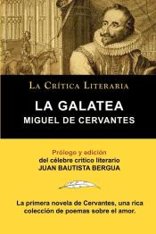
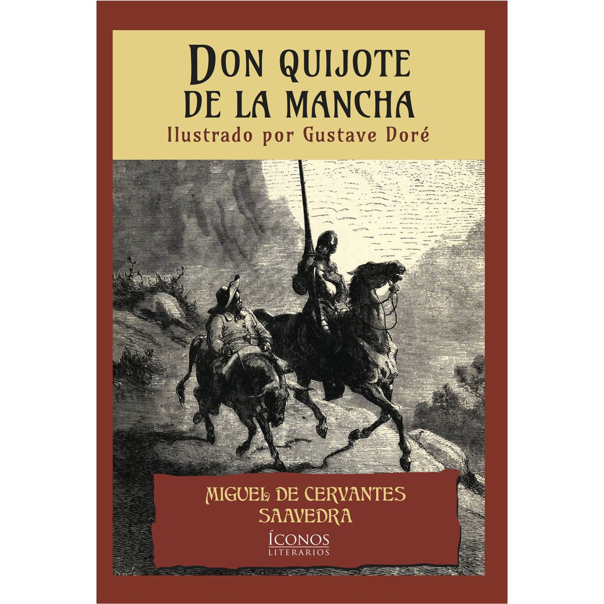
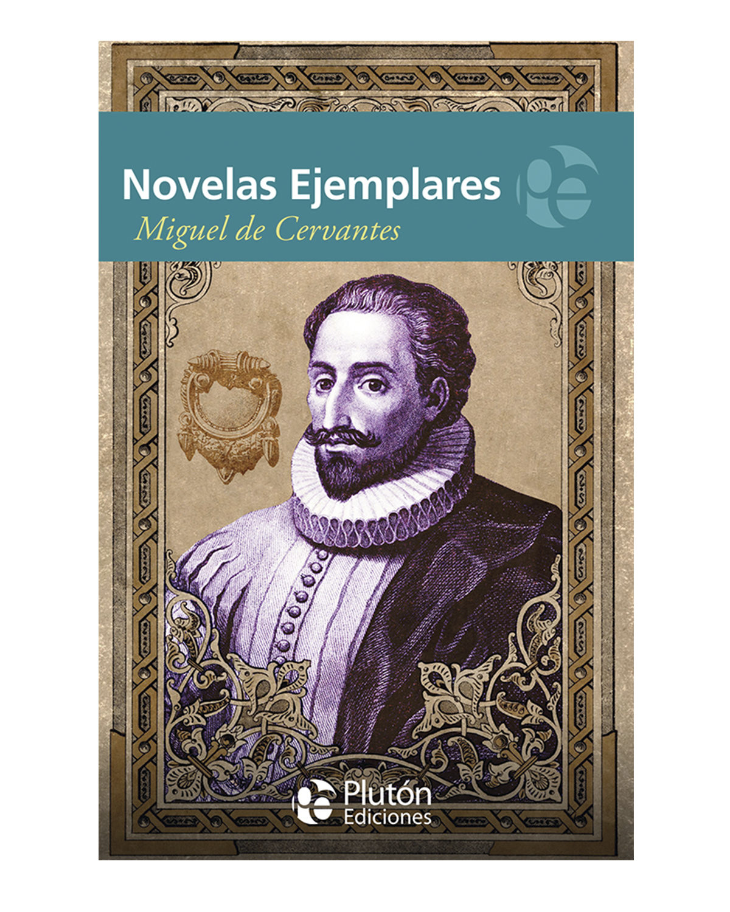
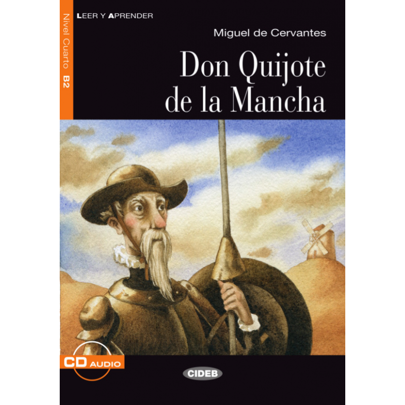
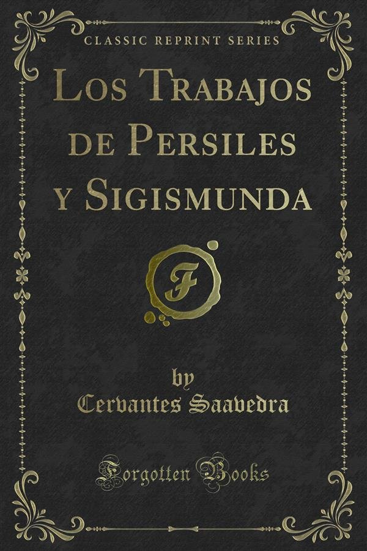
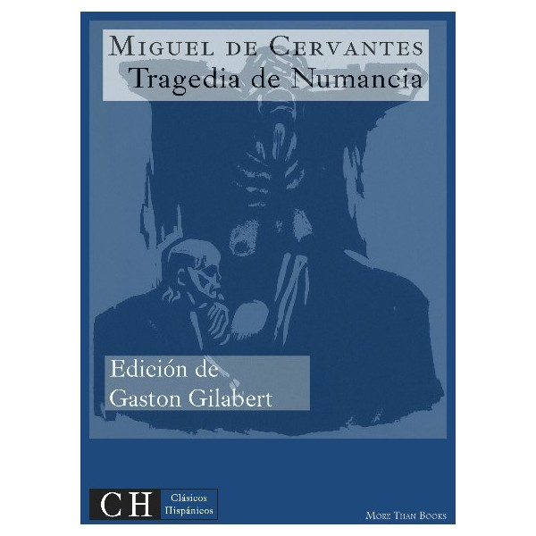
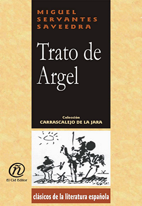
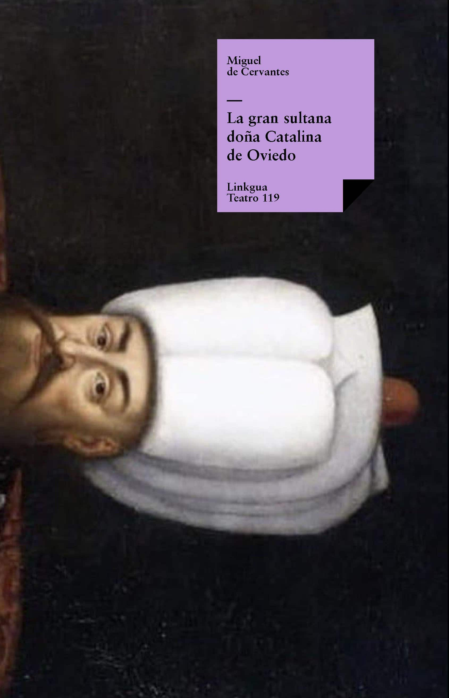
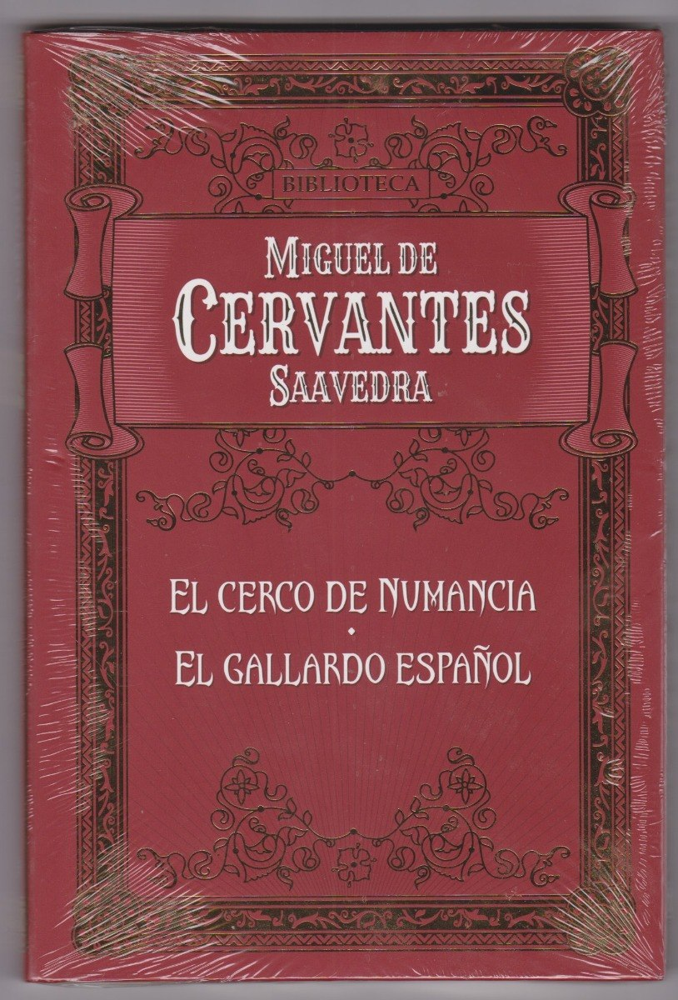

Fecha |
Libro |
Descripcion |
1585 |

|
La Galatea es una novela de Miguel de Cervantes publicada en 1585 en Alcalá de Henares con el título de Primera parte de La Galatea, dividida en seis libros. Ascanio Colonna es el dedicatario de La Galatea, quien en la década de 1580 se encontraba completando sus estudios en dos universidades castellanas, la Universidad de Alcalá y la Universidad de Salamanca. |
1605 |

|
Don Quijote de la Manchaa es una novela escrita por el español Miguel de Cervantes Saavedra. Publicada su primera parte con el título de El ingenioso hidalgo don Quijote de la Mancha a comienzos de 1605, es la obra más destacada de la literatura española y de las principales de la literatura universal, además de ser la más leída después de la Biblia. En 1615 apareció su continuación con el título de Segunda parte del ingenioso caballero don Quijote de la Mancha. El Quijote de 1605 se publicó dividido en cuatro partes; pero al aparecer el Quijote de 1615 en calidad de Segunda parte de la obra, quedó revocada de hecho la partición en cuatro secciones del volumen publicado diez años antes por Cervantes. |
1613 |

|
Las Novelas ejemplares son una serie de novelas cortas que
Miguel de Cervantes escribió entre 1590 y 1612, y que
publicaría en 1613 en una colección impresa en Madrid
por Juan de la Cuesta, dada la gran acogida que obtuvo
con la primera parte del Quijote.
|
1615 |

|
El título de ésta fue El Ingenioso Caballero Don Quijote de la Mancha y consta de 74 capítulos. En el prólogo, Cervantes se defiende irónicamente de las acusaciones del lopista Avellaneda y se lamenta de la dificultad del arte de novelar: la fantasía se vuelve tan insaciable como un perro hambriento. En la novela se juega con diversos planos de la realidad al incluir, dentro de ella, la edición de la primera parte del Quijote y, posteriormente, la de la apócrifa Segunda parte, que los personajes han leído. |
1617 |

|
Los trabajos de Persiles y Sigismunda, historia setentrional es la última obra de Miguel de Cervantes, publicada de forma póstuma en Madrid en 1617. Se trata de una novela bizantina que no hay que confundir con la comedia Persiles y Sigismunda (1633) de Francisco de Rojas Zorrilla, inspirada en ella. El propio Cervantes la consideró su mejor obra; sin embargo la crítica da este título unánimemente a Don Quijote de la Mancha. |
Fecha |
Libro |
Descripcion |
1585 |

|
Como en toda tragedia, el argumento de La Numancia debe ser desvelado desde el principio, y este es un factor fundamental en el género. La irremediable fatalidad a que se ven abocados los numantinos desde el comienzo es parte consustancial al mantenimiento de la tensión dramática en la tragedia y a lograr una efectiva catarsis final. |
1582 |

|
Pertenece al primer periodo de su teatro, el clasicista que sigue las unidades aristotélicas, y contiene elementos autobiográficos (aparece en la obra con el nombre de soldado Saavedra) relativos a su cautiverio en Argel que emparentan esta pieza con otras de cautivos como La gran sultana, El gallardo español y Los baños de Argel. Su estructura es algo deshilvanada, por lo cual a veces se ha dividido en cuatro o cinco jornadas, pero cumple las unidades de acción, lugar y tiempo. La crítica ha señalado entre sus defectos la escasa acción escénica |
Fecha |
Libro |
Descripcion |
1600 |

|
Se publicó con el título completo de Comedia famosa intitulada La gran sultana doña Catalina de Oviedo dentro de las Ocho comedias y ocho entremeses nuevos nunca representados (Madrid, viuda de Alonso Martin, 1615). Es una de las mejores comedias del libro y cuenta cómo esta dama española, cautiva desde la infancia, acepta, tras largas peripecias, el amor del sultán sin renunciar a su religión y logrando la salvación de Lamberto y Clara, aparentes mujeres del harén turco, así como la del gracioso Madrigal. |
1615 |

|
Se inspira probablemente en el Diálogo de las guerras de Orán (Córdoba: Francisco de Cea, 1593) de Baltasar de Morales o quizá en Luis de Mármol, Libro tercero... de la descripción general de África (Granada, 1573). El hecho histórico que sirve de marco es la resistencia de Orán y Mazalquivir en 1563 ante el ataque del rey de Argel; y aunque Cervantes utiliza los episodios históricos documentados, los subordina a su propia experiencia y concepciones poéticas, cumpliendo lo que afirma al final de su obra: "De dar fin a esta comedia / cuyo principal intento / ha sido mezclar verdades / con fabulosos intentos" (otros leen "inventos"). |